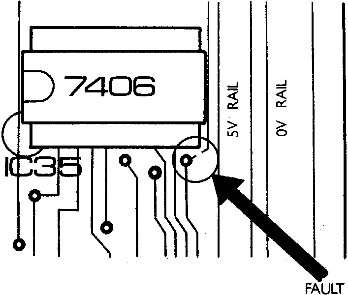

INMC 80 News |
September 1980 – January 1981 · Issue 2 |
| Page 36 of 59 |
|---|
Having bought and constructed my Nascom 2, it worked first time without a single fault … or so I thought. Basic gave me 16067 free, and all my small Basic programs worked as well as I wrote them. Then one day INMC 5 arrived, and in it was the program Eliza. About halfway through typing it in, the Nascom ‘hung up’, so I pressed reset, warm started Basic and proceded to LIST the program. As soon as the program listing reached the point where it had ‘hung’, the screen filled with rubbish. “Ah”, I thought, “The end marker has got lost, and the Nascom doesn’t know where the program ends.”.
I always heed the advice of Lawrence the Long Haired Wierdo, so fortunately I had saved most of the program on tape already. I reloaded, and carried on from there. At exactly the same place, the same thing happened, time and again. “Damn, ‘memory plague’.” I thought, but it didn’t behave like ‘memory plague’, as one of ‘plagues’ symptoms is that it happens randomly, and anyway, the thought of having to string resitors and wires over my memory did not please me. Hours later after trying everything from changing clock speed to swapping memory chips, I had got no further. So I did what I always do in desperation. I hit reset and ‘Tabbed’ the memory. The endless rows of Hex digits marching up the screen are very soothing to shattered nerves. Odd ?? Sections of code written in page 1 of memory were appearing further on in memory. Suddenly, all became clear, somewhere along the line the memory was being decoded as two parallel blocks of 8K instead of a single block of 16K. In other words my RAM had schizophrenia !!
Checking through the pcb revealed a track with a piece missing from it. I scraped away the green resist and carefully soldered a piece of fuse wire across the break. (Ed. Ecolit silver base paint is also very good, and no heat to damage the tracks.) On testing the board all was found to be perfect. I have since heard of two other Nascom owners who have experienced this trouble and in each case the fault has been a broken track adjacent to pin 7 of IC35. Perhaps a duff batch of boards?
The moral of the story is, to check your Ram card thoroughly for address ‘wrap round’ and other faults before believing it is in perfect working order. (Ed. The memory test in the new RAM (B) documentation does just this, but beware, in early issues there was a typing error in the object listing around address 0D0DH, so check against the source code given.)
| Page 36 of 59 |
|---|